A journey through application, preparation, mobility and reflection — told by two students who lived it first-hand in one of Europe's most fascinating capitals.
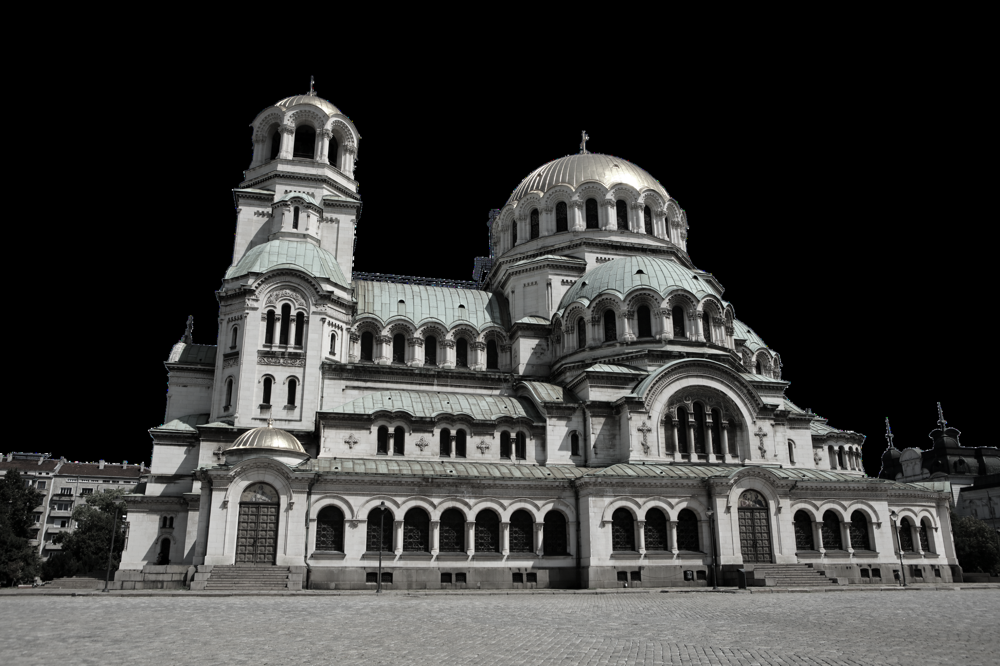
Every Erasmus adventure follows the same road — from the application form to the memories you bring back home.
Submit your form and video, face the interview, and wait for the list that changes everything.
Sort your documents, pack your bags and plan every weekend before you even leave home.
Live it fully — explore the city, connect with people, and make every moment count abroad.
Return with new perspective, language skills and friendships that go beyond borders.
Getting into an Erasmus programme is a process — not just a form. Here are the three key steps Iván and Saray went through.
Fill in the official Erasmus application form and record a short presentation video introducing yourself and your motivation.
Take part in a selection interview where your communication skills, motivation and adaptability are evaluated.
After the interview, candidates are ranked. Getting on the waiting list is still a real chance — patience pays off.
Preparation is half the journey. These are the essentials you need to sort before taking off.
From Sofia's grand landmarks to the mountains of Rila and the streets of Plovdiv — Bulgaria has a lot to offer a curious traveller.
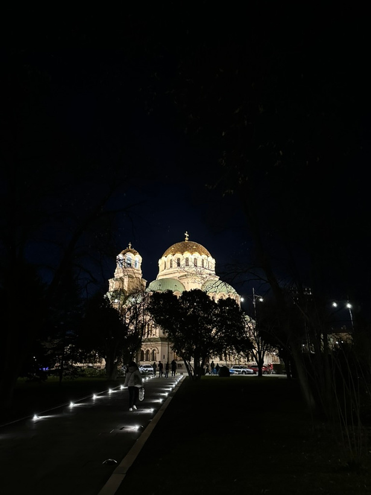
Sofia
One of the largest Orthodox cathedrals in the world — a golden-domed masterpiece at the heart of Sofia. An unmissable icon of Bulgarian culture.
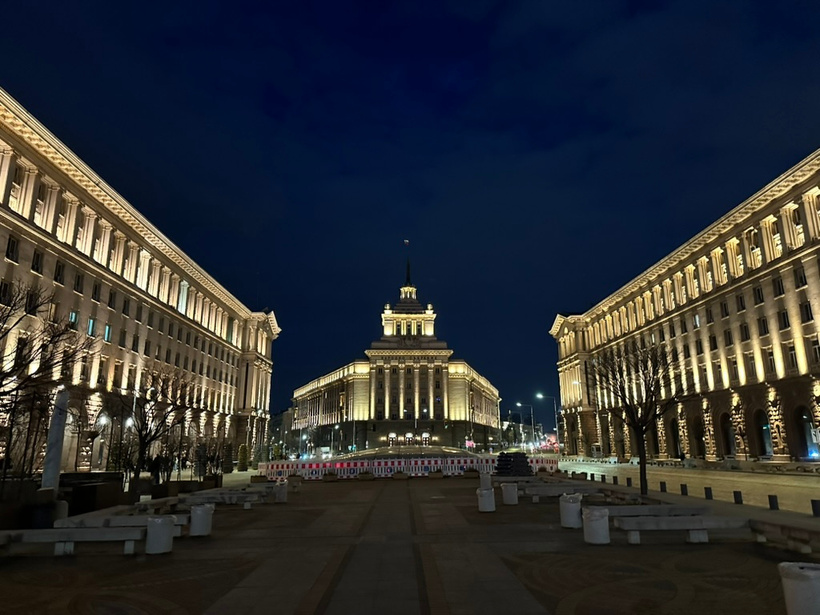
Sofia
Bulgaria's parliament complex illuminated at night — a stunning neoclassical ensemble at the centre of the city, best seen after dark.
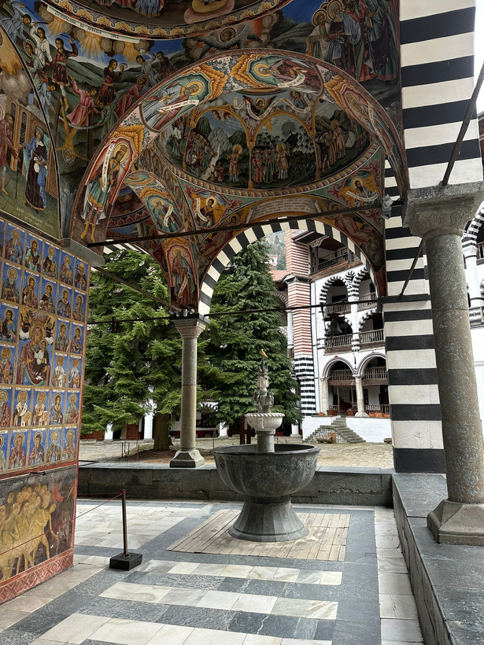
Rila Mountains
A UNESCO World Heritage Site hidden in the Rila mountains. The extraordinary frescoes, architecture and mountain setting make it unlike anywhere else.
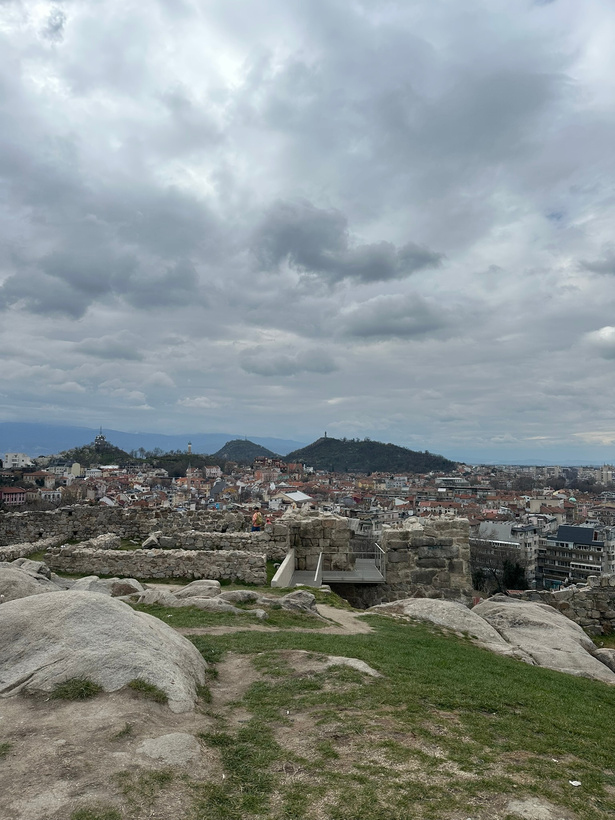
Plovdiv
Bulgaria's second city boasts one of the best-preserved old towns in Europe. Ancient ruins, cobbled streets and a vibrant cultural scene make it unforgettable.
Erasmus is not just about sightseeing. The everyday moments — the spontaneous plans, the people you meet — are what you remember most.
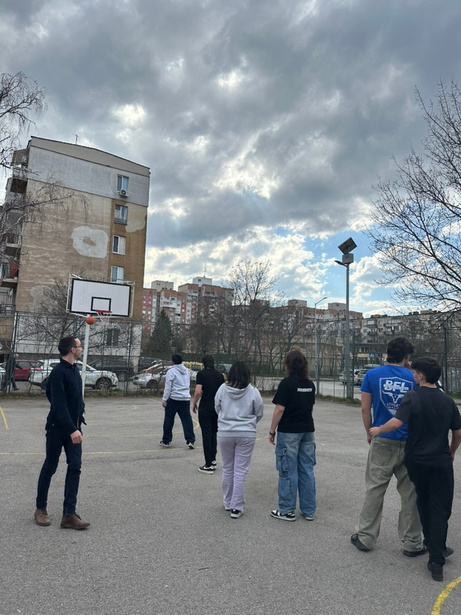
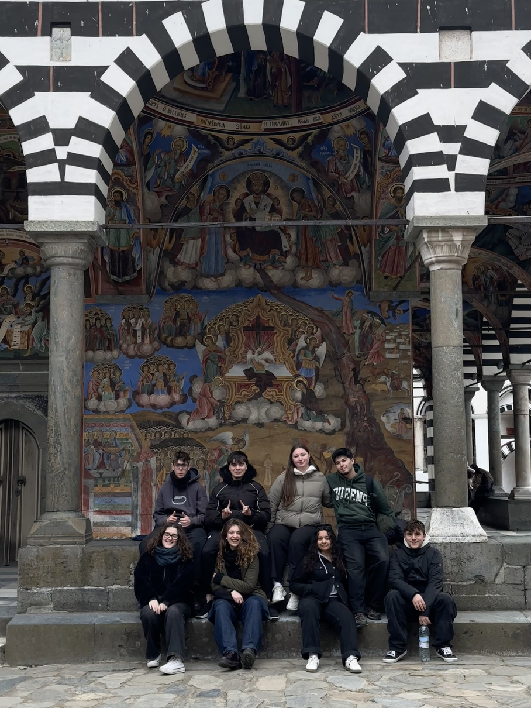
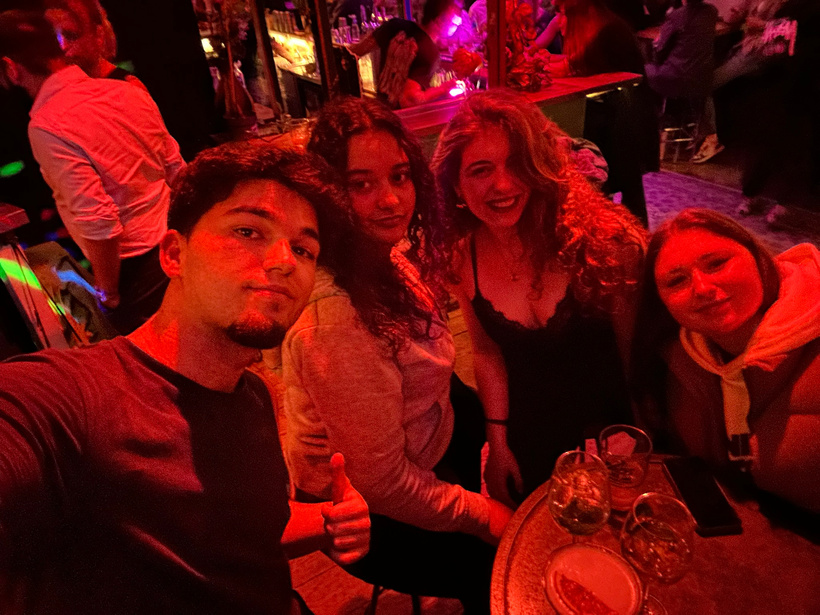
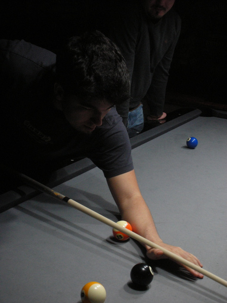
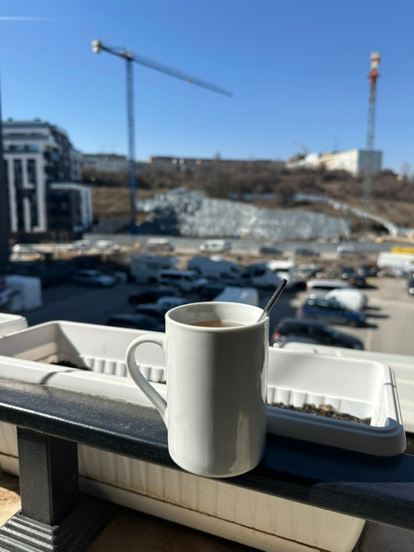
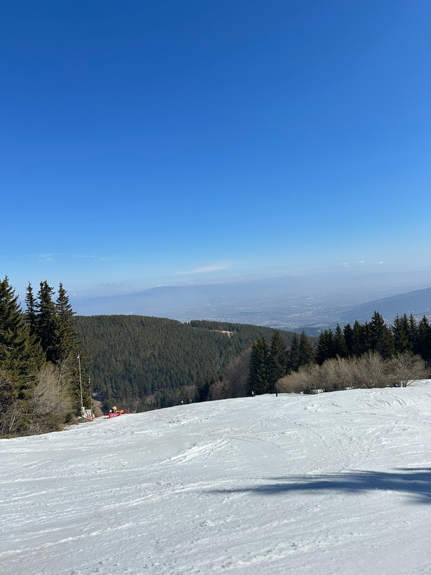
Immersion in an English-speaking workplace accelerates your language skills faster than any classroom ever could.
Living and working in a different country reshapes the way you see culture, communication and your own identity.
The friendships made during Erasmus cross borders. The people you met become part of your story long after you return.
View the original presentation
View Canva Presentation →